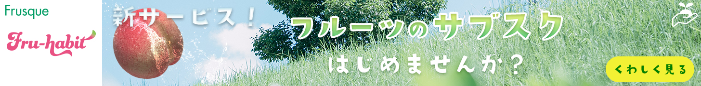
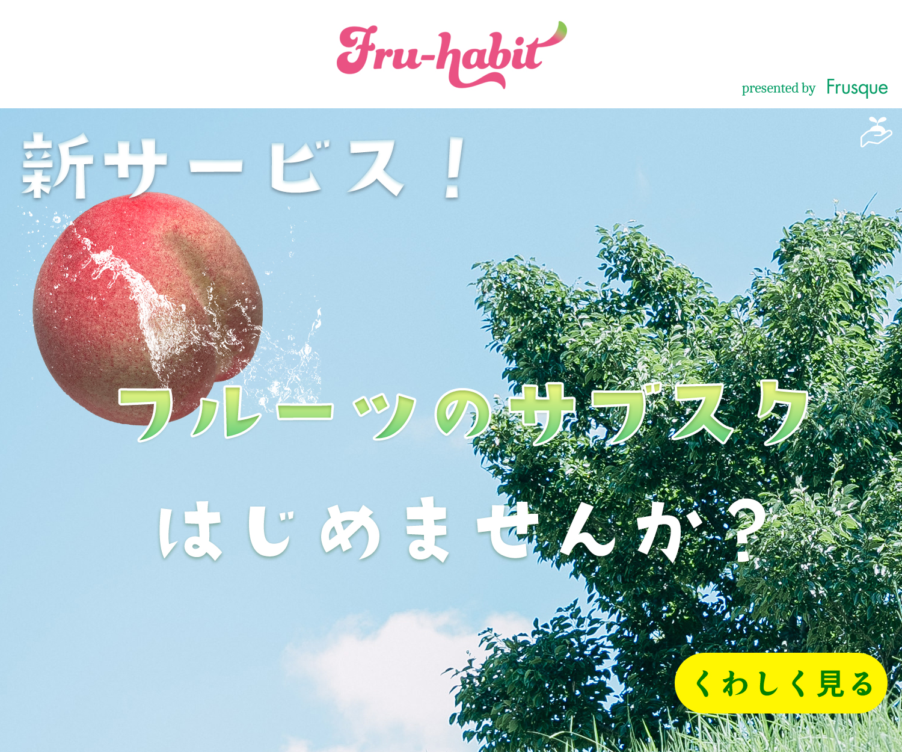
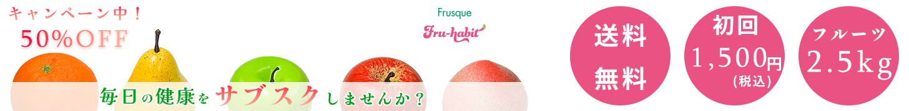
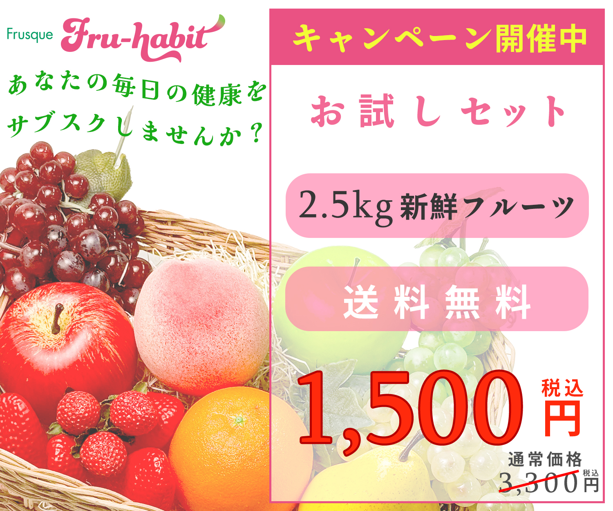
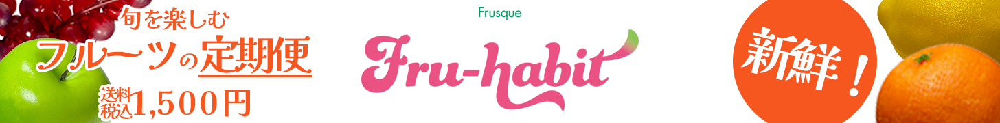
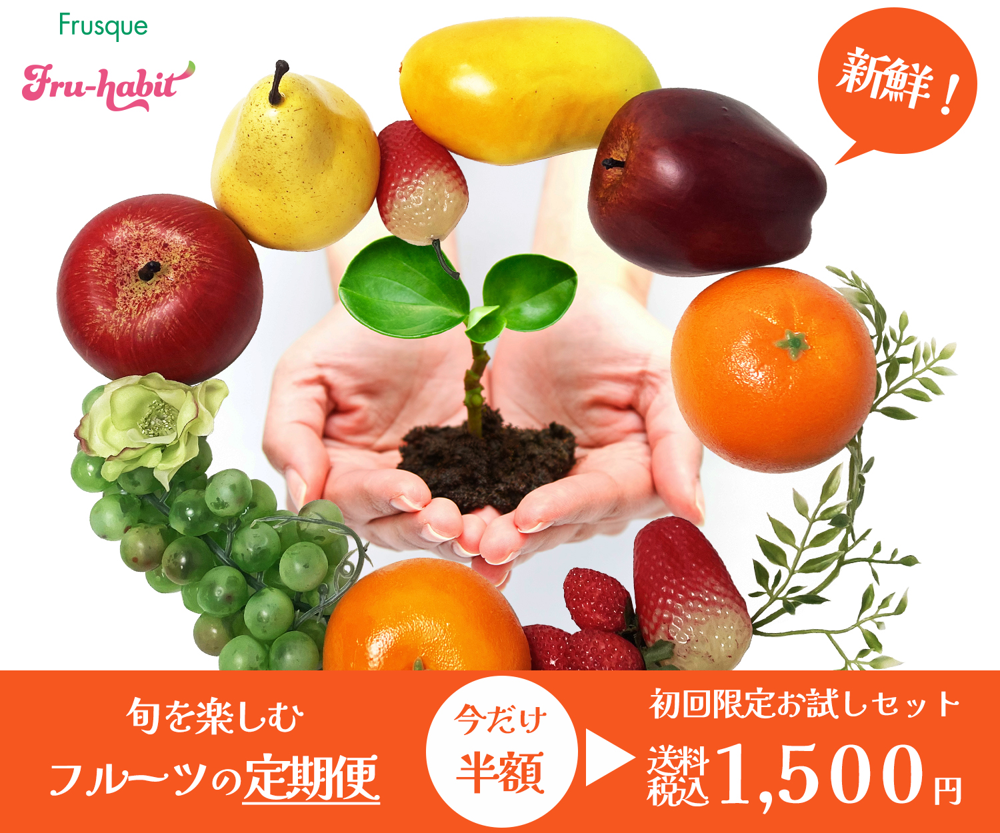

担当
デザイン(「Frusque」・「Fru-habit」ロゴは提供していただきました)
バナーの目的
申込サイトへの誘導・申込＋サブスクリプション登録
1案・リーダーボード

1案・ミディアムレクタングル

素材収集(1時間) / 素材加工(1時間) / デザイン(1時間)
ターゲット
20代の男性・女性。スポーツに取り組む若年層
デザインについて
新鮮なフルーツのみずみずしさを桃の画像＋水しぶきの画像を使用し表現。水色を多く含む画像を配置し、明るく爽やかな印象になるよう加工しました。
あえて価格や詳細情報を絞ることで、サービスの魅力が直感的に伝わり、印象に残りやすいデザインを意識しました。
2案・リーダーボード

2案・ミディアムレクタングル

素材収集(3時間) / 素材加工(4時間) / デザイン(5時間)
ターゲット
30代女性。健康志向かつ節約志向のファミリー層。
デザインについて
価格を目立たせることでキャンペーンの魅力を分かりやすく伝え、複数のフルーツを背景に配置することで新鮮さや商品の充実感を表現しています。
また、重要な情報を優先的に視認できるよう情報の強弱を付け、短時間でも内容が伝わるレイアウトを意識しました。
ブランドイメージのピンク色と緑色で構成し、ブランドカラーを印象付けられるようデザインしました。
3案・リーダーボード

3案・ミディアムレクタングル

素材収集(1時間) / 素材加工(4時間) / デザイン(5時間)
ターゲット
40代の男性・女性。健康志向で4人以上で同居しているファミリー層。
デザインについて
種類の豊富さがパッと見てわかるように複数の果物の画像を使用し、贈りもののようなイメージでデザインしました。
新鮮さをアピールするため、吹き出しを作り文字を配置しました。